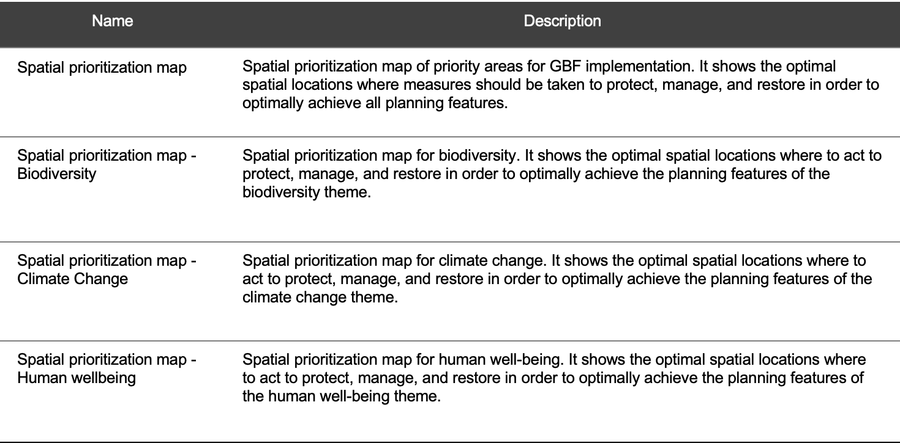

2.11 Visualización y descarga de mapas
Tras ejecutar la optimización, podrá visualizar y descargar 8 mapas de resultado en formato ráster: 4 corresponden a mapas de calor y 4 a mapas de priorización espacial para su país, basados en los resultados del análisis para identificar áreas prioritarias para la implementación del MMB en Ecuador.
Tabla 3. Mapas de priorización espacial que identifican áreas prioritarias para la implementación del MMB disponibles para descargar en la herramienta web Prioritizing Nature.
Pasos
Haga clic en la cuarta pestaña «Mapa de resultados» para ver los mapas de priorización espacial ELSA en la herramienta web.
Acérquese en ciertas áreas haciendo clic en el icono «+».
Puede cambiar entre diferentes vistas de mapa base haciendo clic en el icono de capas ubicado a la izquierda. Se mostrarán tres opciones de mapa base, incluida la vista satelital; haga clic en la que desee para activar la capa (Figura 12).
Figura 12. Opciones de mapa base
Para descargar los mapas en formato ráster o GeoTIFF, que pueden verse y analizarse en software SIG, haga clic en la pestaña «Resultados + Descarga» y luego en «Descargar resultados (capas SIG)» para descargar los mapas de resultado (Figura 13).
Figura 13. Descarga de mapas de resultado
Importante
Al utilizar el mapa de priorización espacial en un informe formal o publicación, utilice la siguiente cita:
MAATE y PNUD 2025. Proyecto Prioritizing Nature. Mapa creado utilizando datos espaciales y la herramienta web Prioritizing Nature en Ecuador https://elsa.unbiodiversitylab.org/Bezos_ECU/, el [inserte fecha con Día Mes Año].